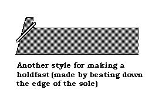
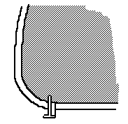
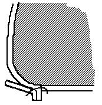
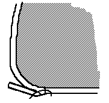
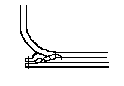

The obvious question that you should be having is why does this guy have a section on making post-medieval shoes in a work on medieval shoes. Simply because these shoes make their appearance at the end of the Middle Ages, and I get a large number of requests for information about how to make them.
The non-turned shoe first appeared in the late 15th century (tradition places this in Germany around 1480), probably when some shoemaker figured out that with a few changes in the placement of the welt, he could make a shoe on a last right side out in the first place, which would mean that he didn't need to turn them, and that this would open up all sorts of options for heavier leathers, and so on. Or maybe some apprentice was just bored, who knows. Current expert opinion holds that the concept developed from the making of types of pattens (trippes, overshoes), in which the leather that came down over the side of the soles was sewn in place in this fashion. In any case, this technology spread fairly quickly, pushing the turned shoe aside, and by the middle of the 16th century relegating turn shoes to dance shoes, children's shoes, servants shoes, and other types of less durable and less expensive footwear.
When I first posted this page, I was fairly inexperienced with non-turned shoes (frequently called "welted shoes" from the mistaken impression that medieval shoes didn't have welts). I'm still no great expert - there are plenty of folks who know a lot more about this than I do -- but I think I can give you a pretty good idea of how to make them.
I am indebted to Al Saguto, David Martinez, D.W. Frommer, and the nice folks at the Honorable Cordwainers Company (http://www.hcc.org/) for what little knowledge I do have. If this work is inaccurate in any way, the fault is mine and not theirs.
For more information, see http://www.personal.utulsa.edu/~marc-carlson/histshoe/index.htm, specifically the material under "Cordwainers." In Dennis De Coetlogon's An Universal History of Arts and Sciences ... and John F. Rees' The art and mystery of a cordwainer.





According to professional bootmaker D.W. Frommer:
"This is Inseaming, a modern term that refers to attaching the welt, vamp, vamp liner, counter and counter cover to the insole; literally, "to seam in the insole". The insole is channeled, that is a rabbet (or groove) is cut into the edge of the insole, and another inside channel is cut parallel to, but interior to the edge. The leather sandwiched between these two channels is called the holdfast. A curved awl is driven through the holdfast in what amounts to a tunnel stitch, beginning in the inside channel and emerging on the outside feather, or outside channel. The awl further pierces the vamp and vamp lining and also the edge of the welting. The bristles are fed into the resulting hole from opposing directions and the first stitch is set, usually with a saddler's lock in a running stitch.
According to Master Cordwainer D.A. Saguto:
"From c.1600, well into the 19thc., and even the 20th into the 21st., the treatment of the insole edge and the architecture of forming the holdfast for inseaming took various forms for shoes and boots made right-side out with a welt, rand, or covered heel. The earliest two identifiable types of holdfasts for these constructions occur in archaeological examples in great numbers: 1) the plain insole, in which the leather is thick enough to sew at the edge with a split-hold, the awl entering the flesh and exiting through the cut edge; 2) a folded variant, where the insole leather was not thick or strong enough to sew in the former manner, but bent up all along the edge into a right-angle "L" shape, the inseam stabbing straight through the up-turned ridge to create the holdfast. In order for the holdfast, and subsequently the inseam itself, to be located far enough under the last bottom so the welt [or rand] was positioned correctly, these two type of insoles were usually made somewhat smaller all around the bottom of the last. By the mid-to-late1600s, after lasts had universally developed sharp featherlines defining the edge of the last bottom, these insoles were intentionally under-cut smaller than the last's bottom shape (Garsault describes this as cutting two notches at the heel breast, then trimming the insole around that much smaller than the last bottom--the heel-seat was left full width).By roughly 1725-30 a third type of insole begins to be found, with an extended "feather" [use your illustration], or sloping bevel of leather outboard to the holdfast itself, which ended flush with the defined edge of the last's featherline, but keeping the holdfast and inseam still well underneath the last. This innovation of the "feather" increased in frequency by the mid-1700s, especially on men's strong work. Though all three types are found concurrently, after circa 1750, insoles with "feathers" dominate the archaeological record except in women's work with forepart rands. By circa 1810-25 the insole "feather" had all but displaced the two former types (Rees decries them in 1813 in favor of the "feather"), though there are references suggesting some shoemakers still persisted making the under-cut forms as late as the 1860s."
Footwear of the Middle Ages - Making Some post-Medieval Construction Shoes, by I. Marc Carlson.
Copyright 1999, 2004.
This page is given for the free exchange of information, provided the author's name is
included in all future revisions, and no money change hands, other than as expressed in
the Copyright Page.